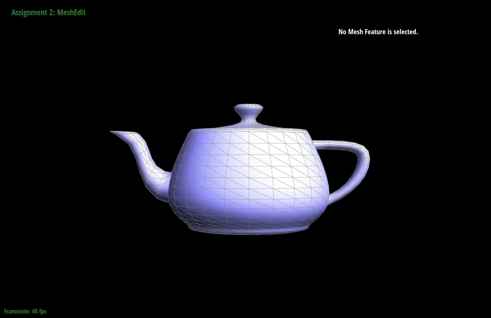
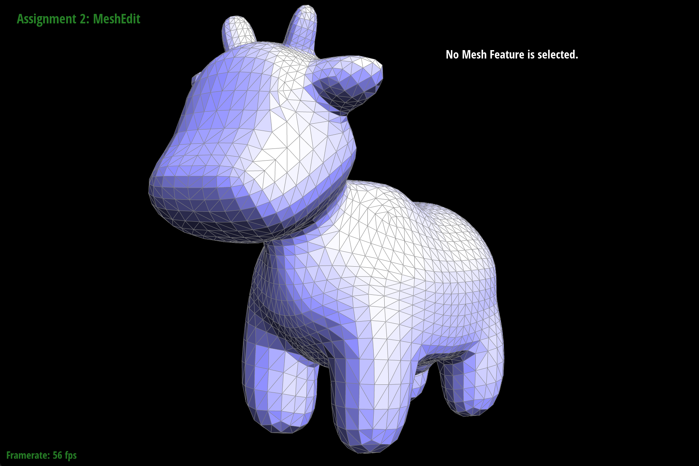
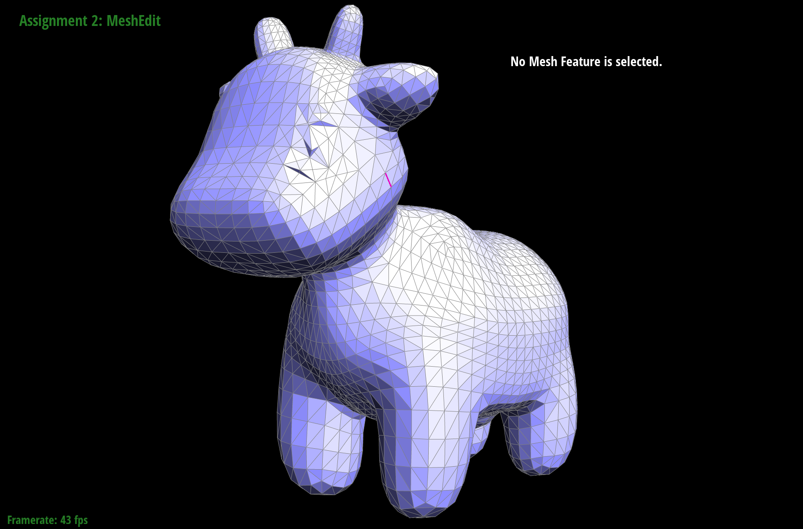
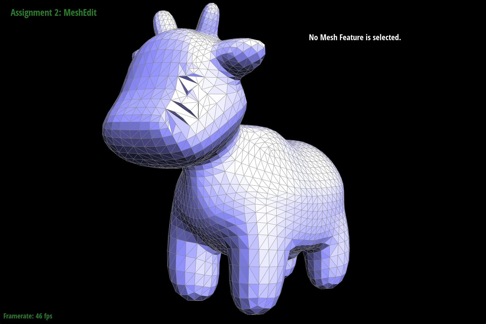

Overview
Our project objective was to implement mesh operations that were mentioned in lectures, such as evaluating Bezier curves, Bezier surfaces, and working with traingular meshes. Specifically, we made use of de Casteljau's Algorithm to form Bezier curves from input control points and extended this to 3 dimensional space to create Bezier surfaces. For the second part of this project, we implemented area-weighted vertex normals, edge flips, edge splits, and loop subdivisions for upsampling on triangle meshes. We utilized a halfedge data structure to represent triangle meshes on which all our implementations are based. We encountered some difficulties clarifying the numerous pointer reassignments for edge flips and splits. Mesh upsampling was also a challenge which required us to break it down into simpler steps, such as computing the updated vertex positions, split edges, flip new edges, which made use of the functions we completed in previous tasks. Overall , we gained a better understanding of the implementation details for the mesh operations described in class.
Section I: Bezier Curves and Surfaces
Part 1: Bezier Curves with 1D de Casteljau Subdivision
De Casteljau's algorithm is a recursive algorithm for evaluating Bézier curves. The algorithm works by repeatedly subdividing the line segments formed by a set of control points. At each level of recursion, the algorithm computes a new set of control points (one less than the previous level) by computing the linear interpolation of points on the previous level. Ultimately, points on the curve are defined by varying parameter \(t\) from \(0 \to 1\) on the level of subdivision at which only one control point is remaining.
In our implementation, we take in the vector of n control points and evaluate a single
step of subdivision by finding the linear interpolation of two consecutive control points.
As a result, we will have a vector of (\(n-1\)) new control points. We use the equation below:
\[P_{new} = (1-t) \times P_0 + t \times P_1\]

|

|

|

|

|

|

|
Part 2: Bezier Surfaces with Separable 1D de Casteljau
Bezier surfaces are two-dimensional parametric surfaces defined by a set of control points, \(4 \times 4 = 16 \) points for our implementation, in 3D space. To evaluate a Bezier surface at a particular parameter value, we can visualize it as 4 Bezier curves in one direction from which 4 "moving curves" in the other direction can be defined by the de Casteljau algorithm. Specifically, the 4 Bezier curves are evaluated using the de Casteljau algorithm. New control points, one from each Bezier curve, are then used to sweep through and form the desired Bezier surface.
In our implementation, we evaluate the Bezier surface for a surface position at parameters \((u, v)\) using the separable 1D de Casteljau algorithm. First, we find the Bezier curve parameterized by \(u\) for each of the 4 Bezier curves in the \(u\) direction. We then evaluate the 4 points, one from each Bezier curve, with the same parameterization and use 1D de Casteljau algorithm with parameterization \(v\) to find a point on the Bezier surface.

Section II: Triangle Meshes and Half-Edge Data Structure
Part 3: Area-Weighted Vertex Normals
Area-weighted vertex normal is one way to calculate the normal vector at each vertex of a 3D mesh. To calculate the area-weighted vertex normal, we first computed the normal for each face of the mesh by using the cross product of two vectors that lie on the face. Once you have the normal for each face, you can calculate the normal for each vertex by averaging the face normals, which are weighted by the area of their face, of all the faces that share that vertex.
In our implementation, we can use a halfedge's next(), twin(), and vertex() functions to traverse all the faces connected to the vertex and find the corresponding halfedges to calculate their normals.

|

|
Part 4: Edge Flip
In our implementation, we first collected all the relevant halfedges pointers. Then, we updated everything, including member variables of the faces, edges, halfedges, and vertices according to the diagram below. In the edge flip operation, we didn’t need to create any new faces, edges, or vertices. Fortunately, we didn’t encounter any major difficulties because we had gone through the whole process in pen and paper prior to code implementation.

|

|
|
Part 5: Edge Split
A triangular mesh can undergo an edge split, which generates a new vertex and either 3 or 4 new edges depending on whether the original edge is deleted or not. To carry out this operation, We followed the same approach as with the edge flip by gathering relevant pointers and reassigning them. The process went smoothly with minimal debugging issues and no typos. Although it's possible to split a boundary edge (as opposed to flipping it), we did not include this feature in my implementation.
|

|

|
|
|

|
Part 6: Loop Subdivision for Mesh Upsampling
Briefly explain how you implemented the loop subdivision and describe any interesting implementation / debugging tricks you have used.YOUR RESPONSE GOES HERE
Take some notes, as well as some screenshots, of your observations on how meshes behave after loop subdivision. What happens to sharp corners and edges? Can you reduce this effect by pre-splitting some edges?
YOUR RESPONSE GOES HERE
Load dae/cube.dae. Perform several iterations of loop subdivision on the cube. Notice that the cube becomes slightly asymmetric after repeated subdivisions. Can you pre-process the cube with edge flips and splits so that the cube subdivides symmetrically? Document these effects and explain why they occur. Also explain how your pre-processing helps alleviate the effects.
YOUR RESPONSE GOES HERE
If you have implemented any extra credit extensions, explain what you did and document how they work with screenshots.
YOUR RESPONSE GOES HERE
Part 7 (Optional, Possible Extra Credit)
Save your best polygon mesh as partsevenmodel.dae in your docs folder and show us a screenshot of the mesh in your write-up.YOUR RESPONSE GOES HERE
Include a series of screenshots showing your original mesh and your mesh after one and two rounds of subdivision. If you have used custom shaders, include screenshots of your mesh with those shaders applied as well.
YOUR RESPONSE GOES HERE
Describe what you have done to enhance your mesh beyond the simple humanoid mesh described in the tutorial.
YOUR RESPONSE GOES HERE